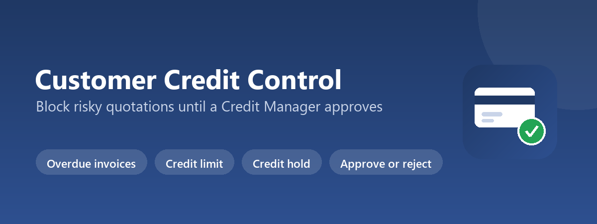

Block quotations for customers with overdue invoices, over their credit limit or on credit hold, until a Credit Manager decides.
When a quotation is opened for a blocked customer, a red banner lists the reasons. The salesperson requests approval with a note and every Credit Manager gets an activity. A Credit Manager then approves, which confirms the order, or rejects with a reason, and it is all logged on the quotation.
⏰ Overdue invoicesBlock when invoices are overdue by more than the days you allow, ignoring small leftovers and with an own allowance per customer if needed. |
💳 Credit limitBlock when the order would take the customer over the credit limit you already keep in Odoo. |
✋ Hold or exemptPut a customer on credit hold by hand, or exempt a trusted customer from every check. |
✅ Approve or rejectA Credit Manager approves, which confirms the order, or rejects with a required reason, and the salesperson is notified. |
📋 Approval queueQuotations waiting for a decision are listed in the Sales app under Credit Approvals. |
📊 Live credit statusThe customer form shows the credit status, the overdue amount and the age of the oldest overdue item, always up to date. |
Odoo 18.0 • Community & Enterprise • depends on Sales and Invoicing • Licence LGPL-3
Odoo implementation and development. thecodelegion.com